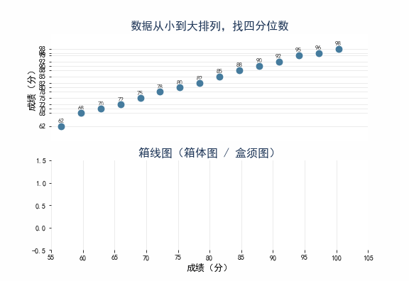

四分位数与箱线图
人教版八年级数学下册 · 动画演示
一、动画演示 (GIF)
上半部分：数据从小到大排列，逐步标出 Q1 / Q2（中位数）/ Q3，并用不同颜色区分四个分区。
下半部分：箱线图分四步构建 —— 端点 → 箱体 → 中位线 → 须线。

二、四分位数计算方法
n=15 个数据（奇数），Q2 取第 8 个，Q1 取前 7 个的中位数（第 4 个），Q3 取后 7 个的中位数（第 12 个）。如果 n 为偶数，Q2 取中间两数的平均数。

三、多组数据对比箱线图
四个班级的数学成绩箱线图并列展示。箱体 = Q1~Q3，中间粗线 = 中位数，菱形 = 平均数，两端须线 = min~max。

关键概念速查
五数概括：最小值、Q1（第25百分位）、Q2（中位数/第50百分位）、Q3（第75百分位）、最大值
四分位距 IQR：Q3 − Q1（箱体的宽度，反映中间 50% 数据的分散程度）
箱线图结构：中间的矩形（箱体）覆盖 Q1~Q3，箱内粗线是 Q2，两端延伸出的"须"连到最小值和最大值